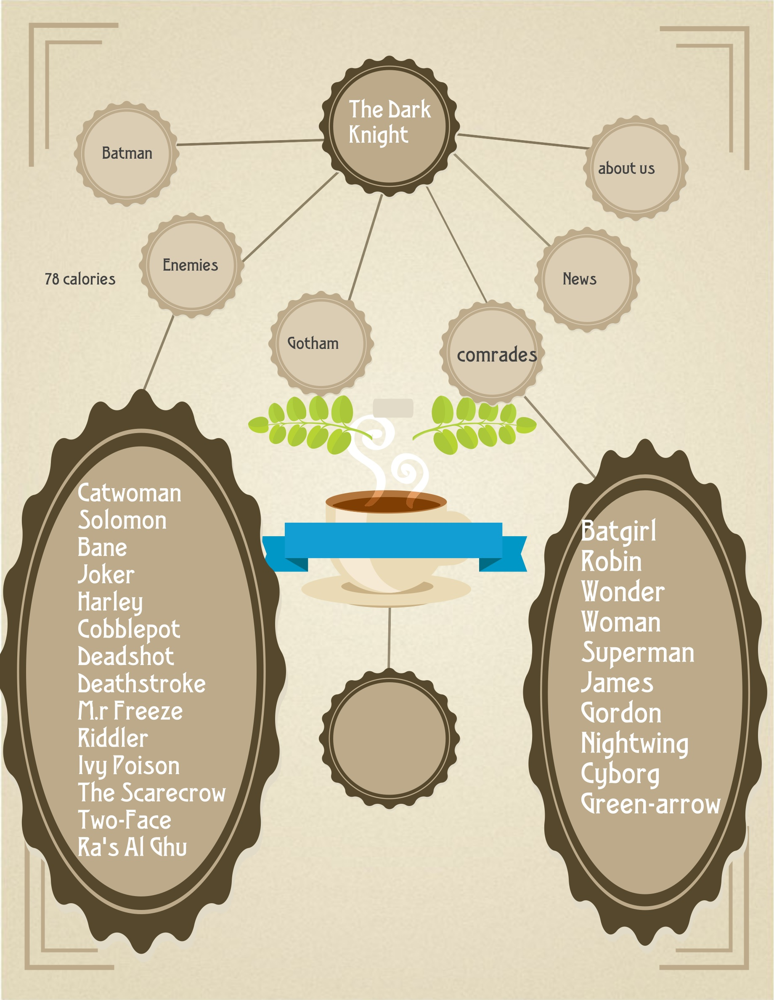

☰
(The) (Dark) (Knight)
Batman
Enemies
Ghotam
Comrades
News
About us
Game
Map-site

References
https://en.wikipedia.org/wiki/Batman
http://www.dccomics.com/
All the images were taken from artbooks and comics owned by DC Comics and drawn mostly pro John Romita, Jr
webpage designed by:
Luis Felipe Lombana